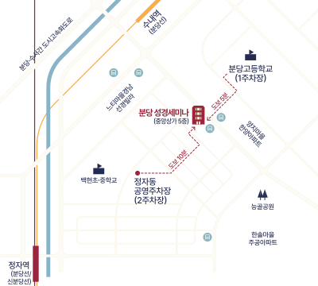

우리가 어디에서 왔는지에 대한 답을 찾습니다.
고고학적 증거를 통해 성경의 진실을 알아봅니다.
인생의 근본적인 문제와 해결책을 제시합니다.
***
성경 공부가 처음이신 분, 성경을 정확하게 알고
싶으신 분, 누구나 참석가능합니다. 평소 궁금했던
성경 관련 질문도 자유롭게 나눌 수 있습니다.
*주최 사정에 의해 세부 일정이 변경될 수 있습니다.
본인과 타인의 강연 집중을 위해 미리 숙지해주세요.
노트나 필기구를 지참하시면
집중에 도움이 됩니다.
실내 냉방이 예상되니
겉옷·담요를 챙겨보세요.
강연 시작 전에 미리 자리에
착석해주세요.
휴대폰은 전원을 꺼주시거나
진동으로 설정해주세요.
지정된 좌석을 이용하며
강연 중 이동을 삼가주세요.
촬영 및 녹음은
자제해주시기 바랍니다.
스태프의 안내에 적극적인
협조 부탁드립니다.
